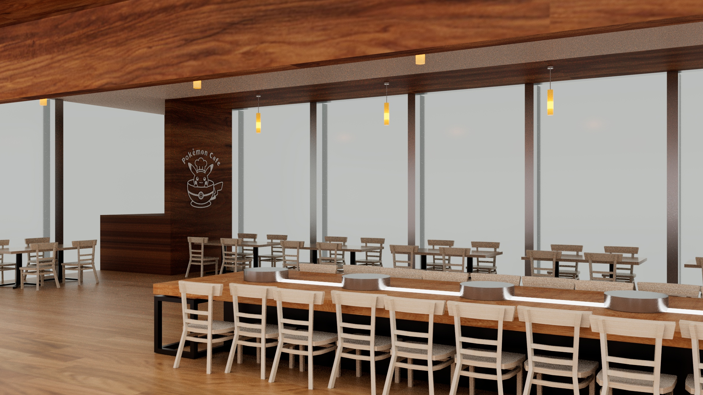
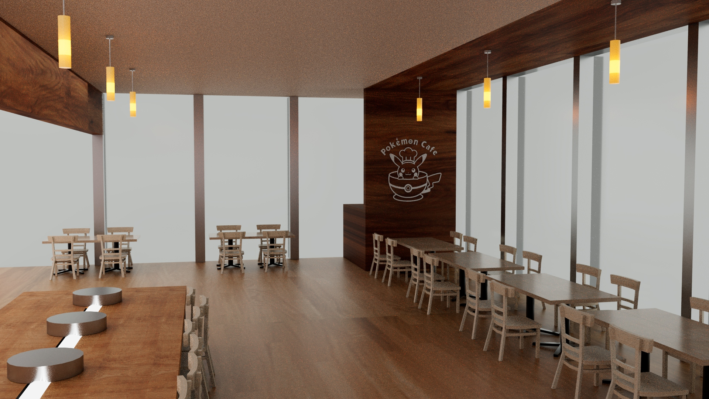

Autodesk Maya
For my DSGN 235 Environment Project, I modeled the Pokémon Café in Tokyo. The focus of this project was on taking everything we had learned to make the objects and adding textures to the objects so that they would be more realistic, then finally creating the correct lighting.